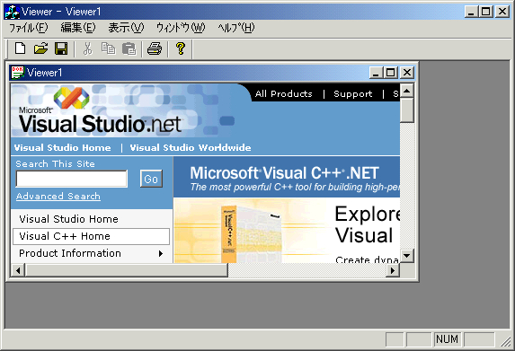
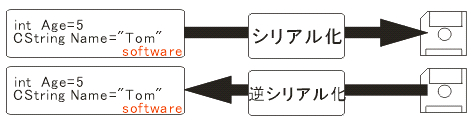
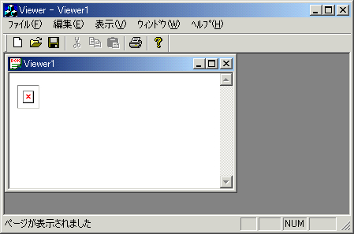
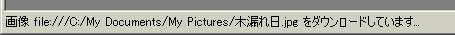
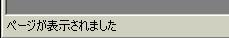

Windowsプログラミングの醍醐味は，やはりグラフィカルなプログラミングが可能であるところです．そしてグラフィカルにするための代表格が，イメージを使用することだと思います．イメージの加工は，画像処理工学の知識を有するために，ここでは，画像を表示させるということだけに機能を特化した，画像viewerを作っていこうと思います．
しかし，画像の表示はそんなにたやすくありません．Windowsで標準の画像フォーマットとされているbitmapでさせも，その画像フォーマットを勉強しなければ，画像を表示させることは困難です．そればかりか，現在は，jpeg/gif/tiff/pngなどの数々の画像フォーマットが存在するために，プログラミング初心者ではせいぜいbitmapがやっとというところでしょう．
でもやっぱり，jpegも見たいし，bitmapも見たい・・・と思うのがユーザの心理です．ここでは，画像のフォーマット知識が無くても，いろいろな種類の画像を表示できるアプリケーションを作成していこうと思います．
◇
注意：このセクションで作成されるアプリケーションは，VisualC++6.0からMFCクラスに追加されたCHtmlViewと呼ばれるクラスを使用します．したがって，それ以前のバージョンのVisualC++では作成することは出来ません．ご了承ください．
さきほども述べたように，画像を表示させるためには画像のフォーマットを知らなくてはいけません．例えばWindows標準の画像フォーマットBITMAPでさえも，
BITMAPFILEHEADER(14byte)
BITMAPINFOHEADER(40byte)
パレット
データというフォーマットで記述されています．したがって本来ならば，表示させたいすべての種類の画像に対するフォーマットを勉強するところから始まるのですが，画像処理を専門にしているサイトではないのでもっと簡単に表示させる方法を考えてみましょう．
◇
みなさんは，インターネット上に置かれている画像をどのように閲覧しますか？おそらくは付属のブラウザ（IE）などで閲覧されていると思います．ブラウザはHTMLという言語で記述されたファイルを見るソフトウェアですが，同時に画像も表示させていますよね．つまり「HTMLによる埋め込み画像」を「ブラウザ機能」を使って表示させることができれば，画像viewerができてしまいそうです．このHTMLファイルを表示するために，MFCには（VisualC++6.0から）CHtmlViewというクラスが追加されています．今回HTMLを使用して画像を表示させていきましょう．
- [ファイル]--[新規作成] を選び、プロジェクトのタブをクリック
- MFC AppWizard(exe)を選びプロジェクト名を記述
※ ここではViewerというプロジェクト名でソフトを作成する．
※ ここで「新しくワークスペースを作成する」にチェックを入れておく．- [Step1] でMDIを選択．
※ 複数ファイルを操作できるアプリケーションになる．- [Step5]までは「次へ」を押していきます．
- [Step6]にてCViewerViewクラスをハイライトすると，「基本クラス」コンボボックスが選択できる．
ここをCHtmlViewに変更する．- 最後に終了ボタンを押す．
※ このアプリケーションに必要なファイルの雛形が作られる．メモ帳を作る時は，ビューの基本クラスをCEditViewにしました（覚えているでしょうか？）．ここではHTMLを表示させることがメインであるのでCHtmlViewにしておきます．
雛型ができあがったら試しに実行してみます．実行方法はメニューから「ビルド」-「実行」でしたよね．おそらく，「取り消されたアクション」とか「ページを表示できません」というページが表示されるでしょう．インターネット回線につながっている場合は，以下のようなページが表示されるかも知れません．(figure1)
figure1 実行結果
これはCHtmlViewはディフォルトで，http://www.microsoft.com/visualc/ を開くことになっているからです．ここで作ろうとしているソフトウェアは，インターネット接続は考慮に入れる必要性はありません．ですからディフォルトの動作ではなく，あたらしい動作を定義する必要があります．これについては後ほど詳しく解説していくことにしましょう．
◇
画像viewerだけあって画像の編集はしないことから，メニューの「編集」という項目は意味をなさないように，メニュー項目の中にはアプリケーションとしてふさわしくないものもあります．それを削除しておきましょう．ここで知っておきたいことがひとつあります．
メニューリソースMDI形式のメニューリソースは２つでセットになっています．それはドキュメントが開かれていない時と開かれている時では，メニューが異なるためです．
IDR_MAINFRAME:何もドキュメントが開かれていないときに表示されているメニュー
IDR_VIEWERTYPE:何かドキュメントが開かれているときに表示されているメニュー
- 以下に該当するメニュー項目を削除する．
IDR_MAINFRAME
[ファイル]─[新規作成]の項目
IDR_VIEWERTYPE
[ファイル]┬[新規作成]の項目
├[上書き保存]の項目
└[名前を付けて保存]の項目
[編集]の項目全て
MFCではDocument-Viewアーキテクチャと呼ばれるスタイルでアプリケーションを設計することになります．これは，ドキュメント(データ)とビュー（表示)を分離するということです．DocumentとViewの関係は１対多の関係になります．例えばWYSIWYG※形式のホームページエディタ（ホームページビルダー，FrontPageなどがその代表）では，ドキュメントはHTMLファイルそのものですが，ビューに関しては，「WYSIWYG編集画面」，「タグ編集画面」，「プレビュー画面」などの複数存在することがあるからです．また，アプリケーションによっては（例えばメモ帳など），DocumentとViewの関係は１対１になるものもあります．
※ WYSIWYG(What You See is What You Get). [訳]あなたが見ているものをあなたは得る⇒見た通りのものをアウトプットできること)ここで重要なことは，DocumentとViewの関係がどうなっているかだけではなくて，データを操作する部分（ドキュメントクラス）とそのデータを表示する部分（ビュークラス）というものが分離されていることによって，プログラムの複雑化を防いでいるということだといえます．
作ろうとしている画像viewerでも同じ事がいえます．画像のOpen , Closeと，画像を表示させることは似て非なることです．つまり画像を直接扱うことはドキュメントに任せておいて，画像の表示はビューに専念させればプログラムはすっきりするでしょう．ただDocument-ViewアーキテクチャはMFCだけの考え方ではありません．したがって，このように，設計指向を明確にとらえたソフトウェアの製作は，のちのち自分の力になると思います．
◇
Document - View アーキテクチャが分かったところで，本ソフトウェアの重要な概念，シリアライゼーションについて簡単に説明しておきましょう．これもMFCの考え方の一つです．そして極めて重要です．
ソフトウェアは，通常データを”主記憶装置”＝”メモリ”上に保存しておきます．それはメモリへのアクセスが，ハードディスクのような補助記憶装置よりも断然高速に行えるからです．しかし，ソフトウェアは終了してしまうと確保したメモリを解放してしまうので（そもそも，解放するようにプログラムしなければなりません）せっかくストアした情報も失ってしまいます．これではなんか不便な気がします．そこで私達は「ファイルに保存」という操作でデータを残し，「ファイルを開く」という操作でデータをソフトウェアに渡すことで，その不便さを解消します．
しかし，これはプログラマからみたら面倒くさい話です．なぜなら・・・
変数に格納されているデータをファイルに書き込まなくてはなりません．そのためには，そして読み込むときは，
- 保存用のファイルをファイルディスクリプタを介してOpenする．
- 複数の変数があることを考えて，適切なフォーマットでファイルに書き込む．
- ファイルをCloseする．
- データが保存されているファイルをファイルディスクリプタを介してOpenする．
- 保存時に決めたフォーマット通りにデータを抽出し変数にデータを代入．
- ファイルをCloseする．
というコードをいちいち考えなくてはなりません．これは非常に面倒くさいと思いませんか？まだ変数が少なかったらまだしも，データ構造がかなり複雑だったら（構造体など）大変なことになりますね．そこで，”メモリ上の変数”⇔”ディスク上のファイル”のデータのやりとりを直接行う仕組みがあったら便利です．それをシリアライゼーションといいます．特に変数からファイルへの変換を「シリアル化」，逆にファイルから変数への変換を「逆シリアル化」と呼ぶます．
シリアライゼーションのイメージは以下に示すとおりです（figure2）．
figure2 シリアライゼーション
多くの場合，シリアライゼーションはDocumentクラスで行われることが多く，それに伴いシリアル化されるデータ（変数）も，Documentクラスのメンバ変数であることが多いです．なぜなら，MFCでシリアル化できる最低条件は，
- CObject の派生クラスであること（CDocumentクラスはCObjectの派生クラスである）
- マクロDECLARE_SERIAL, INPLEMENT_SERIAL が実装してあること（Documentクラスはディフォルトで実装）
- Serialize関数を実装していること（Documentクラスはディフォルトで実装）
であるからです．シリアル化を実現する関数が，CDocument::Serialize(CArchive& ar)という関数です．「ファイルを開く」・「ファイルを保存する」という操作がメニューによって行われた時，この関数が呼ばれることになります．
さて，シリアル化を少し使って画像ファイルのフルパスを取得してみます．シリアル化はDocumentクラスのメンバ変数に多いと述べたのでここでもそのようにしていきます．まずDocumentクラスに画像のフルパスを格納するメンバ変数を追加します．
- ワークスペースのクラスタブをクリックし，CViewerViewを右クリックし，メンバ変数の追加をクリック
※ ダイアログが開かれます．- ダイアログに以下の値を設定してOKを押す．
変数のタイプ：CString
変数名：m_strFilePath
アクセス制御：publicつぎに，ViewerDoc.cppのCViewerDoc::Serialize(CArchive& ar)関数を以下のように変更します．
void CViewerDoc::Serialize(CArchive& ar) { CFile *cFile; // CFile オブジェクトへのポインタ if (ar.IsStoring()) { // TODO: この位置に保存用のコードを追加してください。 } else { // TODO: この位置に読み込み用のコードを追加してください。 // アーカイブから画像ファイルの情報を取得 cFile = ar.GetFile(); // 画像ファイルのフルパスをメンバ変数に代入 m_strFilePath = cFile->GetFilePath(); } }ここで新しく出てくるオブジェクトCArchiveクラスについて，簡単に説明しておきましょう．
CArchiveクラスオブジェクト
MFCでは、シリアル化される変数オブジェクトと２次記憶装置間のインターフェースとして CArchive クラスのオブジェクトを使用します。CArchiveオブジェクトを使用することで，かなり簡単にシリアル化・逆シリアル化が可能になります．if (ar.IsStoring())
シリアライズが保存用（シリアル化）で呼ばれたのか，読み出し用（逆シリアル化）で呼ばれたのかは，Serialize関数の引数であるCArchiveクラスのarに格納されています．そこでCArchiveのメンバIsStoring()で保存用か読み出し用かをチェックします．これがtrueの時は保存用ということになりますが，ここでは読み出しがメインなのでelseの方へ制御が移ります．
cFile = ar.GetFile();
どのファイルが読み込まれたかという情報もCArchiveが持っているので，そのファイル情報をCFileクラスのポインタに格納します．
m_strFilePath = cFile->GetFilePath();
ここでは画像ファイルのフルパスが重要なのですから，CFileオブジェクトからフルパスを取得し，Documentクラスのメンバ変数に格納しておきます．このように記述すると，「ファイルを開く」で画像ファイルが指定された時，この関数が呼ばれ，ファイルのフルパスが自動的にメンバに格納することができます．
確かにシリアル化を使用しなくてもこれらは実現することが可能です．ただ少々面倒くさいかもしれないのでシリアル化の機能を使用したのです．
- 「開く」メニューに対応したハンドラをDocumentクラスに追加
- CFileDialogを定義し，DoModalで表示
- 指定された画像ファイルのフルパスを得る
- メンバ変数に格納
先ほど実行した時に，インターネット接続されている環境下ならば，http://www.microsoft.com/visualc/を開くことになっているといいましたが，それは，viewerview.cppのOnInitialUpdata関数の中に
void CViewerView::OnInitialUpdate() { CHtmlView::OnInitialUpdate(); // TODO: このコードはポピュラーなウェッブ サイトへナビゲートします // 任意のウェッブ サイトに変更してください Navigate2(_T("http://www.microsoft.com/visualc/"),NULL,NULL); }と記述されているからです．このNavigate2という関数は，引数のURLに移動する関数です．OnInitalUpdate関数は，最初のビューがアタッチされた時（やさしく言えば，ドキュメントが開かれようとしたときなど，ビューが作成されようとした時；MDIでは複数のドキュメントが開かれますが、当然割り当てられるビューも複数になるので、新しくドキュメントを開こうとするときにはこの関数が実行されます）に実行されます．ここで下のように思った人は鋭い方ですね．
Navigate2の第一引数に画像ファイルのフルパスを与えれば，画像が開けるのではないか？
答えは△です．理論的には間違いはありませんが，うまくいかないことがあるのです．私の環境ではbitmapファイルをうまく読み込むことは出来ませんでした（笑）．実はCHtmlViewはブラウザと同等なものであるということが影響します．
つまり私の環境下では，たまたまWindows固有の「関連付け」によってjpegやgifといったファイルは，ブラウザで開くことができるのですが，bitmapは通常「ペイント」で開くことになっていたために，ブラウザで開けずペイントで開くというアクションに置き換わってしまうのです．このような環境依存型のソフトウェアは望ましくありません．したがって，ＨＴＭＬに画像を表示させる旨を記述しておくことで，ＨＴＭＬを開くことを専門としているブラウザが力を発揮し，ファイルの関連付けを気にする必要がなくなります．
ここでいいたいことは・・・
- マニュアルに書かれている事は，机上の理論話．
- 現実に適用した時，その理論が成り立つかの保証はされていないことが多い．
- 理論と現実は大きく違う．
ということです．さて気を取り直して，先ほど逆シリアル化を使って得た画像のフルパスを表示できるようにHTMLで記述しなくてはなりません．HTMLにおいて画像を表示するタグは，
<img src = "画像ファイルの相対/絶対パス">
でしたよね．以上をふまえて，OnInitialUpdateを以下のように編集してみましょう．
void CViewerView::OnInitialUpdate() { CHtmlView::OnInitialUpdate(); CViewerDoc* pDoc = GetDocument(); // CViewerDocへのポインタを取得する． CString strHtmlPath = _T("C:\\tmp.html"); // C:\tmp.htmlを一時ファイルとして使用． // CString strTag : HTMLファイルに記述するタグ文字列 (以下,そのフォーマット) //------------------------------------------------------------------------ // <html> // <head> // <meta http-equiv="Content-Type" content="text/html; charset=shift_jis"> // </head> // <body> // <img src = "(画像ファイルのフルパス)"> // </body> // </html> //------------------------------------------------------------------------- CString strTag = "<html>\r\n" "<head>\r\n" "<meta http-equiv=\"Content-Type\" " "content=\"text/html; charset=shift_jis\">\r\n" "</head>\r\n" "<body>\r\n" "<img src = \"" + pDoc->m_strFilePath + "\">\r\n" "</body>\r\n" "</html>\r\n" ; // C:\tmp.htmlを書込み用として（既存の場合は中身をクリア）開く． CStdioFile cFile(strHtmlPath,CFile::modeCreate|CFile::modeWrite); cFile.WriteString(strTag); // タグを記述する cFile.Close(); // ファイルを閉じる Navigate2(strHtmlPath,NULL,NULL); }CViewerDoc* pDoc = GetDocument();
Documentクラスへのポインタを取得します．これは，逆シリアル化によって取得された画像のフルパスがDocumentクラスのメンバ変数に格納されているため，メンバ変数へのアクセスに必要になるからです．CString strHtmlPath = _T("C:\\tmp.html");
C:\tmp.htmlを，画像を表示させるHTMLファイルとします．そのためにファイル名をCString型で保存しておきます．本来一時ファイルは，他のファイル名とかぶらないユニークな名前をつけてあげなくてはなりませんが，ここではその説明については省略します．あまり難しくないので是非トライして下さい．（当然，このソフトを誰か他の人に使ってもらう時は，必ずユニークな名前を持つ一時ファイルを作らなければいけません．理由はわかりますよね．）
もう１つ重要なことは，文字列の中で \ を使いたい時は \\ と， " を使いたい時は \" と書かなくてはなりません．これはC言語でも同じ事です．
CString strTag = ・・・(以下略)
実際のタグをCString型で保存します．画像のフルパスについては，pDoc->m_strFilePath という形で取得することができます．長くてよくわからないかもしれませんが，<html>という情報がstrTagに保存されます．
<head>
<meta http-equiv="Content-Type" content="text/html; charset=shift_jis">
</head>
<body>
<img src = "(画像ファイルのフルパス)">
</body>
</html>
CStdioFile cFile(strHtmlPath,CFile::modeCreate|CFile::modeWrite);
C:\tmp.htmlを書込み用(CFile::modeWrite)，また既存の場合は中身をクリアして（CFile::modeCreate）開きます．CStdioFileはCFileの派生クラスなので，CFileとしての機能はもちろん，拡張された機能も持ったファイル操作のためのクラスです．cFile.WriteString(strTag);
先ほどstrTagに保存したタグをファイルに書き込みます．cFile.Close();
HTMLファイルを閉じます．
Navigate2(strHtmlPath,NULL,NULL);
HTMLファイル(strHtmlPath)を表示させます．これで画像ファイルが表示できるでしょう．
さて，早速実行してみましょう・・・．多分以下のように表示されると思います(figure3)．
figure3 なんだこれは？
上の×マークは，画像のリンクが正しく張られていないときに起こるものです．Viewer1と書かれた子ウィンドウで右クリックしてみましょう．HTMLファイルなのでポップアップメニューがでてきますよね(^-^;)．ここで，ソースを表示してみてください．ソースはこう記述されていると思います．
<html>
<head>
<meta http-equiv="Content-Type" content="text/html; charset=shift_jis">
</head>
<body>
<img src = ""> ← ファイルが指定されていない！
</body>
</html>imgタグの中に画像ファイルが指定されていないので，リンクミスとなったため×マークが表示されたようです．しかし初期状態では画像の指定はされるはずがありません．
この問題は，ディフォルトで起動時に新規にドキュメントを作成するように指定されているために起きる現象なのです。ドキュメントが起動時に生成されることによって，
- （空の）ドキュメントが生成される．画像パスも当然指定されない．
- 1に伴い，フレームワークは，ビューを生成しようとする．
- CViewerView::OnInitialUpdateが実行される．
- 画像パスが指定されないまま，HTMLファイルを作成
- Navigate2でそのファイルを表示・・・
と事がすすんでしまっていたというわけです．これを回避するためには，起動時にドキュメントを生成しなければよいということになります．こうすることでビュー（子ウィンドウ）も生成されません．ではどこでそのような回避をしたらよいでしょうか？
実は，アプリケーションの根幹の動きを制御するためにViewer.cpp内にCViewerAppクラスが存在します．このクラスの中で特に重要なメンバ関数は，CViewerApp::InitInstance()関数です．この関数がアプリケーションを作成しているといっても構いません．ひまつぶし！？のためにこの関数の中をのぞいてみましょう．この関数の中で特に大切な部分を抜粋します．◇
CMultiDocTemplate* pDocTemplate; pDocTemplate = new CMultiDocTemplate( IDR_VIEWERTYPE, RUNTIME_CLASS(CViewerDoc), RUNTIME_CLASS(CChildFrame), // カスタム MDI 子フレーム RUNTIME_CLASS(CViewerView)); AddDocTemplate(pDocTemplate);これは，MDIアプリーケーションのドキュメントテンプレートが定義されているところです．簡単に説明するなら，CViewDocと対応する子ウィンドウはCChildDFrame，ビューはCViewerViewにすると定義しているわけですね．
// メイン MDI フレーム ウィンドウを作成 CMainFrame* pMainFrame = new CMainFrame; if (!pMainFrame->LoadFrame(IDR_MAINFRAME)) return FALSE; m_pMainWnd = pMainFrame;Viewer自体のウィンドウが生成されます．そういえば，IDR_MAINFRAMEはメニュー項目でしたよね．
// DDE、file open など標準のシェル コマンドのコマンドラインを解析します。 CCommandLineInfo cmdInfo; ParseCommandLine(cmdInfo); // コマンドラインでディスパッチ コマンドを指定します。 if (!ProcessShellCommand(cmdInfo)) return FALSE; // メイン ウィンドウが初期化されたので、表示と更新を行います。 pMainFrame->ShowWindow(m_nCmdShow); pMainFrame->UpdateWindow(); return TRUE;ここは，コマンドライン（プログラムの引数みたいなものですね）について書かれています．コマンドラインを指定し，それをパーズ（構文解析）し，その情報を元にpMainFrame->ShowWindow(m_nCmdShow);でウィンドウを表示する〜なんてことをしていると解釈してください．つまり，コマンドライン情報CCommandLineInfoクラスに，ドキュメントを生成しないというコマンドラインを記述しておけばいいという話なのです．
◇
では，コマンドラインを調整して，新規ドキュメントを生成しないようにしましょう．といっても，Viewer.cpp内のCViewerApp::InitInstance()関数内部に以下の1行を加えるだけです．
// DDE、file open など標準のシェル コマンドのコマンドラインを解析します。 CCommandLineInfo cmdInfo; ParseCommandLine(cmdInfo); // 空の新規ドキュメントを生成しない(ここを追加) cmdInfo.m_nShellCommand = CCommandLineInfo::FileNothing; // コマンドラインでディスパッチ コマンドを指定します。 if (!ProcessShellCommand(cmdInfo)) return FALSE; // メイン ウィンドウが初期化されたので、表示と更新を行います。 pMainFrame->ShowWindow(m_nCmdShow); pMainFrame->UpdateWindow(); return TRUE;実行してみると，子ウィンドウが１つも開かれないviewerが起動し，「ファイルを開く」で指定された画像ファイルを閲覧することが可能になりましたよね．
一通り画像viewerになったのはいいのですが，幾つかカッコ悪いところがあります．
- 大きい画像を表示中，ステータスバーに「画像***をダウンロードしています」と表示されてしまう（figure4）．
- 画像を表示した後，ステータスバーに「ページが表示されました」と表示されてしまう(figure5)．
figure4. ダウンロードじゃないってば！
figure5. だからページじゃないってば！
とくに上の２つのカッコ悪さは，「HTMLだとバレバレ」です．このステータスバーの表示も，実はCHtmlViewが管理しています．Viewクラスは，表示するためのクラスですからね．ステータスバーの表示は，OnStatusTextChangeで変更できるのです．では変更手順を追ってみましょう．
- クラスウィザードを開き，「メッセージマップ」タブをクリックする．
- ダイアログに以下の値を設定し，「関数の追加」を押す．
プロジェクト：Viewer
クラス名：CViewerView
オブジェクトID：CViewerView
メッセージ：OnStatusTextChange- 「コードの編集」を押す．
- CCViewerView::OnStatusTextChange(lpszText)関数の中に記述されている，CHtmlView::OnStatusTextChange(lpszText);をコメントアウトする．
こうすると，ファイルを開いている途中でも，開いたあとでも，「レディ」とだけ表示されます．
◇
上の操作は，オブジェクト指向プログラミングで重要であるオーバーライド（上乗り）というものです．いま扱っているクラスはCViewerViewクラスですが，これはCHtmlViewクラスの継承(つまりCHtmlViewを基にして作られた)クラスです。
オーバーライドとは継承先クラスで，継承元クラスと同じ名前のメンバ関数を定義することです．この場合だと，継承先クラスCViewerView内に，継承元クラスCHtmlViewと同じ名前のメンバ関数を定義することに相当します．CViewerViewは，CHtmlViewから作られたクラスなので，CViewerView内では，当然CHtmlView::OnStatusTextChangeを使用することができますが，オーバーライドすると，CViewerView内でOnStatusTextChange関数が実行される時は，CViewerView::OnStatusTextChangeが使用されることになります．今回は，CViewerView::OnStatusTextChange内に何も書かなかったために，CHtmlView::OnStatusTextChangeが実行されることがなくなるために，ステータスバーの文字列が変更されることがなくなったのです．
余談ですが，CViewerViewクラス内で，OnStatusTextChangeをオーバーライドしてしまった場合に，どうしてもCHtmlView::OnStatusTextChangeを使いたい場合はどうするの？という疑問がありますが，OnStatusTextChangeと書くところを::OnStatusTextChange書くことで実行することができます．この::をスコープ解決演算子といいます．◇
このセクションでは，画像viewerの製作を通して，シリアル化とオーバーライドについて学びました．どちらもMFCにおいて重要なことです．是非ご自分でプログラミングされるとより実感が湧くと思います．
Copyright by Chiaki Fujimon.
All Rights Reserved.